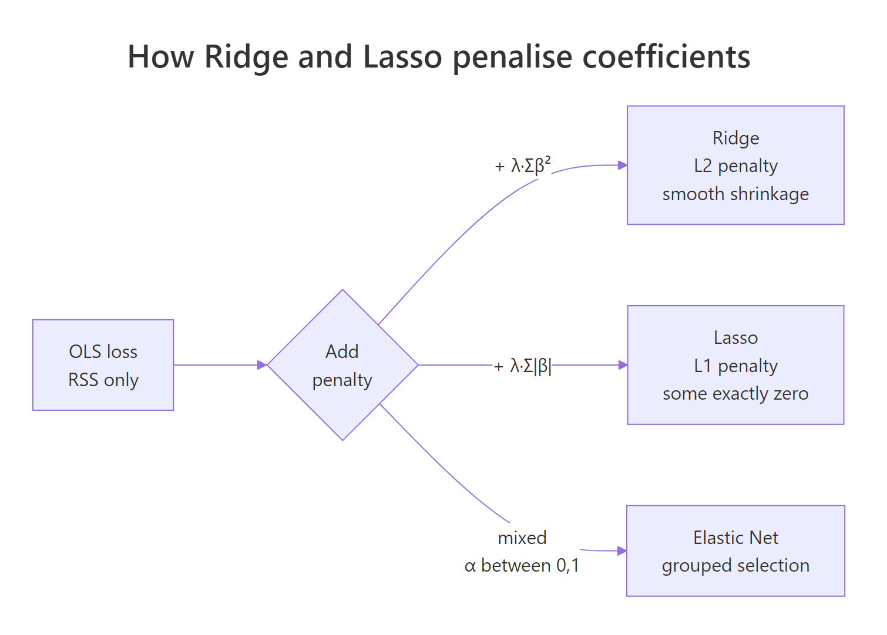
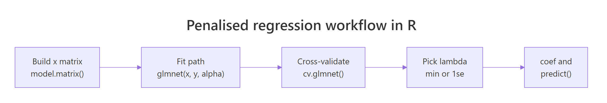
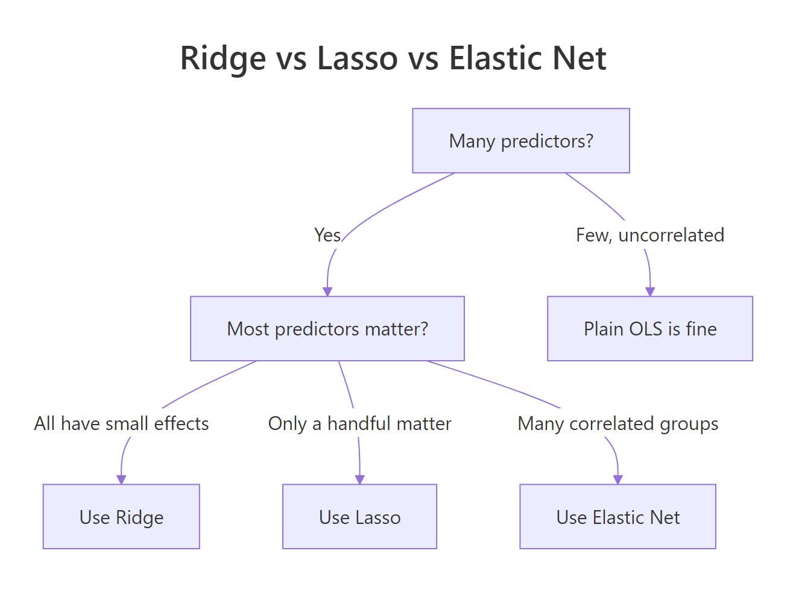

Ridge and Lasso in R: How Penalised Regression Shrinks Coefficients and Selects Variables
Ridge and Lasso are penalised linear regressions that add a cost for large coefficients, trading a small bit of bias for a big drop in variance. Ridge shrinks every coefficient smoothly toward zero; Lasso forces some all the way to zero, which doubles as automatic variable selection.
What problem does penalised regression solve?
Plain lm() has a failure mode that turns up everywhere in real datasets. When predictors outnumber rows, or when several predictors carry the same information, ordinary least-squares overreacts. Coefficients balloon, signs flip on nearly identical samples, and test predictions are far worse than the training fit promised. Penalised regression adds a cost for the size of the coefficients, and that single change tames the wild swings. The fit below shows the payoff: Lasso automatically drops four predictors and keeps only the variables that actually carry signal.
Four predictors, zn, indus, age, and rad, came back at exactly zero. The nine survivors are the variables the penalty thinks carry real signal. An ordinary lm() fit on the same data keeps all thirteen, with large and unstable estimates that move every time the training sample shifts.
glmnet package needs a local R/RStudio session. Run buttons on glmnet and cv.glmnet blocks are read-only on this page, but every code block is copy-paste ready for your own R session. Install once with install.packages("glmnet"). The #> comments show the output you will see locally.Try it: Drop the first predictor (crim) from the matrix and refit Lasso. How many non-zero coefficients remain at the same lambda of 0.5?
Click to reveal solution
Explanation: coef() returns a sparse matrix; comparing it with != 0 gives TRUE for the intercept plus every retained predictor. sum() counts them.
How do Ridge and Lasso differ in their penalty?
Both methods start from the same ordinary least-squares loss and bolt a penalty term on top. The shape of that penalty controls everything that follows: whether coefficients can hit zero, how shrinkage spreads across correlated predictors, and how the path of solutions evolves as the penalty grows.
$$\text{OLS:}\quad \min_{\beta} \sum_{i=1}^{n}\bigl(y_i - x_i^\top \beta\bigr)^2$$
$$\text{Ridge:}\quad \min_{\beta} \sum_{i=1}^{n}\bigl(y_i - x_i^\top \beta\bigr)^2 + \lambda \sum_{j=1}^{p} \beta_j^2$$
$$\text{Lasso:}\quad \min_{\beta} \sum_{i=1}^{n}\bigl(y_i - x_i^\top \beta\bigr)^2 + \lambda \sum_{j=1}^{p} |\beta_j|$$
Where:
- $\beta_j$ is the coefficient on predictor $j$
- $\lambda \ge 0$ is the penalty strength (the tuning parameter you choose)
- $p$ is the number of predictors
- $n$ is the number of observations
Ridge squares each coefficient, so its penalty is a smooth bowl around zero. Lasso uses absolute values, which trace a diamond with sharp corners at the axes. Those corners are the geometric reason Lasso can set coefficients to exactly zero. Ridge can only push them close.

Figure 1: How the L2 and L1 penalties change the same OLS loss.
You can see the difference in one line of R. Fit each method at the same lambda, then count how many coefficients land at zero.
At a lambda of 0.5, Ridge has dropped exactly zero predictors and Lasso has dropped four. That single contrast is the whole story: reach for Lasso when you want a shorter, interpretable model, and Ridge when you want every predictor kept but tamed.
alpha between 0 and 1 to mix L1 and L2 penalties. This helps when several predictors are strongly correlated, because pure Lasso tends to pick one variable from a correlated group and drop the rest, while Elastic Net keeps the group together with shared shrinkage.Try it: Fit Elastic Net with alpha = 0.5 and count zero coefficients at the same lambda. The count should land between Ridge's 0 and Lasso's 4.
Click to reveal solution
Explanation: At alpha = 0.5 the L1 term still creates zeros, but the L2 component softens the corners of the diamond. Fewer coefficients are pushed all the way to zero than under pure Lasso.
How do you fit Ridge regression with glmnet?
The glmnet() API has two rules worth committing to memory. First, it does not accept a formula: you pass a numeric matrix x and a numeric vector y. Second, it fits the full path of lambda values in a single call, so one fitted object contains roughly 100 different models, not just one.

Figure 2: The standard penalised-regression pipeline in R.
Use model.matrix() to convert factor predictors into numeric dummies, drop the intercept column it adds automatically, and hand the result to glmnet() with alpha = 0 for Ridge.
Each row is a different lambda. Df counts non-zero coefficients (always 13 for Ridge, since it never zeroes any predictor). %Dev is the fraction of deviance explained, similar to R-squared. Lambda walks from huge on the left, where every coefficient is crushed near zero, down to tiny on the right, where the fit approaches plain OLS.
x must be a fully numeric matrix. Pass a data frame with character or factor columns and glmnet throws a type error. The safest prep is model.matrix(formula, data)[, -1]: it one-hot-encodes factors and strips the intercept column in one step.Peek at the coefficients at two different lambdas to see shrinkage in action.
At s = 0.01 the Ridge coefficients look close to what lm() would give, just slightly tamed. At s = 100 every coefficient is squeezed near zero, and the intercept absorbs most of the prediction. Ridge shrinks proportionally, so the relative ordering of predictor importance stays roughly the same as lambda grows.
Try it: Extract Ridge coefficients at s = 10 and report which predictor has the largest absolute coefficient.
Click to reveal solution
Explanation: [-1] drops the intercept so it does not dominate the max. which.max(abs(...)) returns the index of the largest absolute value, and names() pulls the predictor name.
How do you fit Lasso and let it select variables?
Flip alpha = 0 to alpha = 1 and glmnet() becomes Lasso. The fit returns the same kind of object, but now Df changes as lambda moves: variables drop out as the penalty grows. Reading the same path at three lambda values shows variables entering one by one in rough order of importance.
Walk the columns left to right. At a large lambda only rm (rooms per dwelling) and lstat (low-income population share) survive, the two predictors the housing literature has long flagged as dominant. As lambda shrinks, more variables re-enter in rough order of importance. That ordered entry is why the Lasso path is sometimes called a variable selection path.
Pull the names of the non-zero predictors at any single lambda with one which() call.
Nine predictors plus the intercept: glmnet has done model selection and coefficient estimation in a single pass. No p-value forward selection, no AIC search, no multi-step pipeline.
Try it: Find the smallest lambda in lasso_fit$lambda at which exactly four predictors have non-zero coefficients (ignoring the intercept).
Click to reveal solution
Explanation: sapply() scans every lambda in the path and counts the non-zeros. We want the smallest lambda (least regularisation) that still holds the count at exactly five (four predictors plus the intercept).
How do you choose lambda with cross-validation?
Picking lambda by eye is guesswork. cv.glmnet() runs K-fold cross-validation across the full lambda path and returns the value that minimises out-of-sample error. It is the default workflow whenever you actually want predictions out of the model.
cv.glmnet() returns two lambdas. lambda.min is the value with the lowest cross-validated error: the best fit on held-out folds. lambda.1se is the largest lambda whose CV error is still within one standard error of the minimum, a more conservative choice that produces a simpler model and tends to generalise better on noisy data.
Compare coefficients at both picks to see the trade-off in concrete numbers.
lambda.min keeps ten predictors with full-strength coefficients. lambda.1se keeps only six and shrinks them more aggressively. On unseen data the simpler 1se model often predicts better despite fitting worse on the training set, because it is less tuned to the noise in any single sample.
set.seed() before cv.glmnet(). The K folds are random, so two runs without a seed can return different lambdas. Reproducibility matters most when you compare models across notebooks, papers, or pull requests.lambda.1se, switch to lambda.min when you trust the training set. For clean experimental data where variance is low, lambda.min wins. For observational data with outliers or drift, the conservative lambda.1se is the safer call.Try it: Run cv.glmnet() with alpha = 0 (Ridge) and compare its minimum CV error to the Lasso minimum.
Click to reveal solution
Explanation: $cvm is the vector of cross-validated errors, one per lambda. Indexing it at the position of lambda.min returns the minimum error, which is the score each method would earn on held-out data.
When should you choose Ridge, Lasso, or Elastic Net?
Three penalties, one decision. The right choice depends on what you want the final model to do: keep every predictor and tame them, pick a short interpretable list, or handle correlated groups gracefully.

Figure 3: Quick decision tree for picking a penalty.
| Method | Penalty | Sets coefs to zero? | Best when |
|---|---|---|---|
| Ridge | L2 (squared) | No | You want every predictor kept, many are modestly useful, multicollinearity is the main worry |
| Lasso | L1 (absolute) | Yes | You need a short, interpretable model and some predictors are truly noise |
| Elastic Net | Mix | Yes, group-wise | You have correlated predictor groups and want sparsity without losing the group |
Fit Elastic Net with alpha = 0.5 and line its CV error up against Ridge and Lasso.
Elastic Net edges out both Ridge and Lasso on this Boston split. That is typical when a few predictors (here rm and lstat) dominate but a handful of weaker correlated ones still carry signal. Lasso would keep one and drop the rest of a correlated group; Ridge would keep them all but at small magnitudes; Elastic Net keeps the group with shared shrinkage.
glmnet standardise for you. The package scales each predictor to unit variance before fitting, applies the penalty uniformly, and back-transforms coefficients to the original units. Setting standardize = FALSE is almost always a mistake unless you have already centred and scaled by hand.Predictions follow the same predict() API as lm(). Pass a new matrix and a lambda, either as a name or a numeric value.
All three predictions land within 0.3 units of each other and slightly above the actual medv of 24, which is what you would expect for a model that has not seen this exact row but has learned its broader neighbourhood from similar observations.
Try it: Predict medv for row 100 of Boston using cv_lasso at lambda.1se.
Click to reveal solution
Explanation: s = "lambda.1se" picks the more conservative CV lambda. newx must be a matrix, so we slice with drop = FALSE to keep the matrix shape and not collapse to a vector.
Practice Exercises
Each capstone exercise combines several ideas from above. Use distinct variable names so you do not overwrite the tutorial session.
Exercise 1: Lasso variable list at a target sparsity
Fit Lasso on the Boston matrix. Find the lambda on lasso_fit$lambda where exactly six predictors have non-zero coefficients (not counting the intercept). Save the predictor names to my_six.
Click to reveal solution
Explanation: Use the largest lambda with seven non-zeros so you get the smallest stable six-predictor model. Drop (Intercept) so the result is just the predictor names.
Exercise 2: Ridge vs OLS on heavily correlated predictors
Simulate 100 rows where x1 and x2 are 0.95 correlated and y = 3*x1 + 3*x2 + rnorm(100). Fit lm() and cv.glmnet(alpha = 0). Save the x1 coefficient from each model side by side to my_results.
Click to reveal solution
Explanation: The OLS estimate for x1 bounces far from the true 3 because of the 0.95 correlation between x1 and x2. Ridge stays close to 3 because the L2 penalty pushes collinear coefficients toward each other rather than letting one absorb the other's signal.
Exercise 3: Hold-out RMSE of Ridge vs Lasso
Split Boston 70/30. Fit Ridge and Lasso on the 70% with cv.glmnet. Predict on the 30%. Compute RMSE for each and save both to a named vector my_rmse.
Click to reveal solution
Explanation: Standard hold-out evaluation: train on 70%, predict on 30%, compute root mean squared error. Lasso edges out Ridge here by a hair, largely because it dropped two weak predictors that would otherwise have added noise to the test predictions.
Complete Example
Tie every step into one end-to-end workflow on a simulated dataset with a known sparse signal. Only the first five predictors carry true effect; the next fifteen are pure noise. A working Lasso pipeline should recover that structure.
Lasso recovered the five true predictors and dropped all fifteen noise predictors. The test RMSE of 1.04 is close to the irreducible noise standard deviation of 1, so the model is nearly as good as the oracle that knows the true sparsity pattern. Clean recovery like this is the reason Lasso is the default first move when you suspect most of your predictors carry no signal.
Summary
| Method | alpha | Penalty | Zeroes coefs? | Pick when |
|---|---|---|---|---|
| Ridge | 0 | L2 squared | No | Multicollinearity, keep every predictor |
| Lasso | 1 | L1 absolute | Yes | Need an interpretable, short model |
| Elastic Net | 0 to 1 | Mixed | Yes, group-wise | Correlated predictor groups with sparsity |
Key moves to remember:
- Build a numeric matrix with
model.matrix(formula, data)[, -1]. - Fit the path with
glmnet(x, y, alpha = α)and the cross-validated version withcv.glmnet(). - Pick lambda from
cv_fit$lambda.min(best fit) or$lambda.1se(robust fit). - Pull coefficients with
coef(fit, s = "lambda.min")and predictions withpredict(fit, newx = ..., s = ...). - Call
set.seed()before anycv.glmnet()so folds are reproducible.
References
- glmnet package documentation. Stanford Statistics. Link
- Hastie, T., Tibshirani, R., Friedman, J. The Elements of Statistical Learning, 2nd ed. Chapter 3.4: Shrinkage Methods. Link
- Tibshirani, R. Regression Shrinkage and Selection via the Lasso. JRSS Series B (1996). Link
- Hoerl, A. E., Kennard, R. W. Ridge Regression: Biased Estimation for Nonorthogonal Problems. Technometrics (1970).
- Zou, H., Hastie, T. Regularization and Variable Selection via the Elastic Net. JRSS Series B (2005). Link
- James, G., Witten, D., Hastie, T., Tibshirani, R. An Introduction to Statistical Learning, 2nd ed. Chapter 6.2: Shrinkage Methods. Link
- glmnet CRAN reference manual. Link
Continue Learning
- Linear Regression is the OLS baseline that Ridge and Lasso improve on. Understanding the unpenalised fit makes the shrinkage story concrete.
- Multicollinearity in R covers the problem Ridge was invented to solve. Read it if your regression coefficients flip signs or have inflated standard errors.
- Variable Selection and Importance With R surveys alternatives to Lasso for picking predictors, including stepwise methods and random-forest importance.